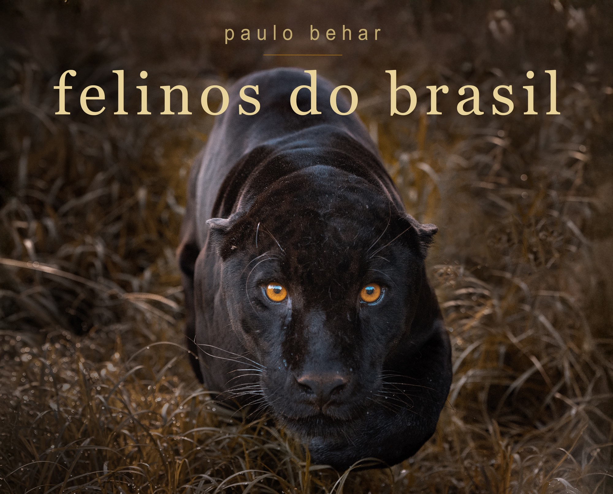
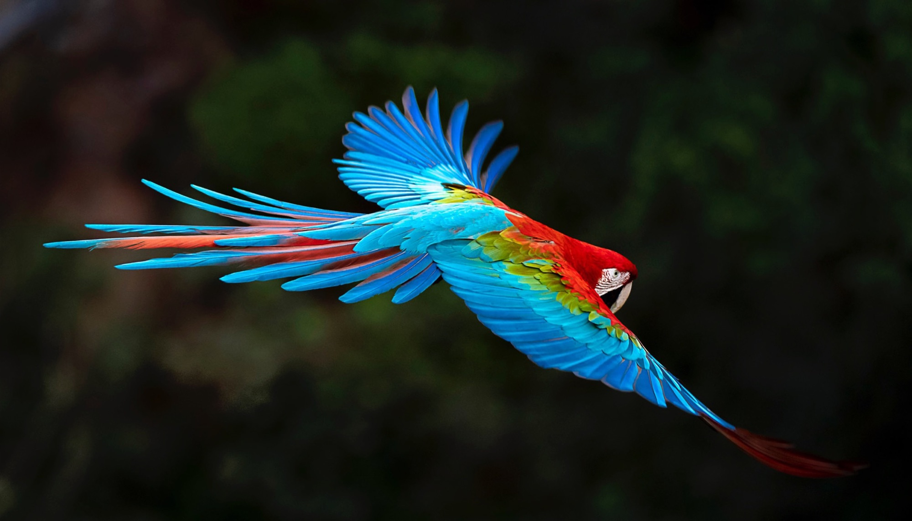

Fotografias para olhar com calma.

o livro
felinos do brasil

fine art
galerias
gaia, planeta vivo
exposições
- Olhares Revelados Museu Afro Brasil · Parque Ibirapuera, São Paulo
- Parallax Art Fair Londres, Reino Unido
- Gaia, Planeta Vivo Câmara Municipal de Arujá, São Paulo
- Auckland Festival of Photography Auckland, Nova Zelândia
Toda fotografia começa com um instante.
O olhar é o que fica.